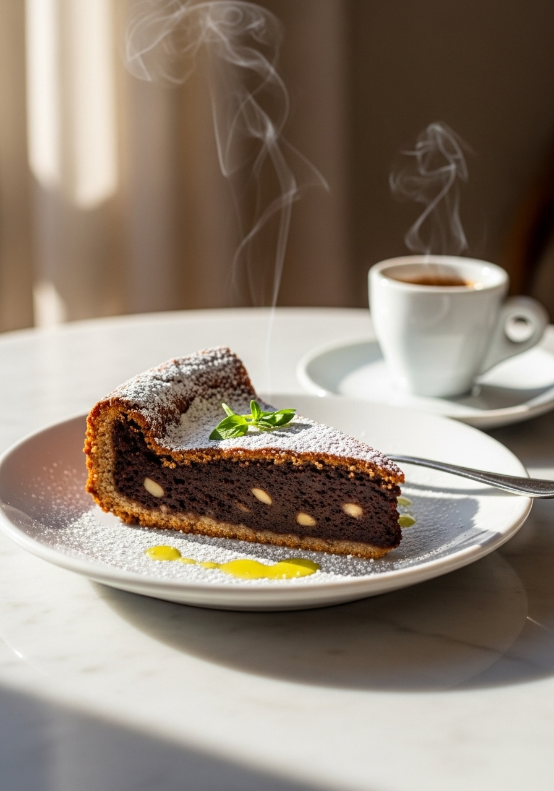
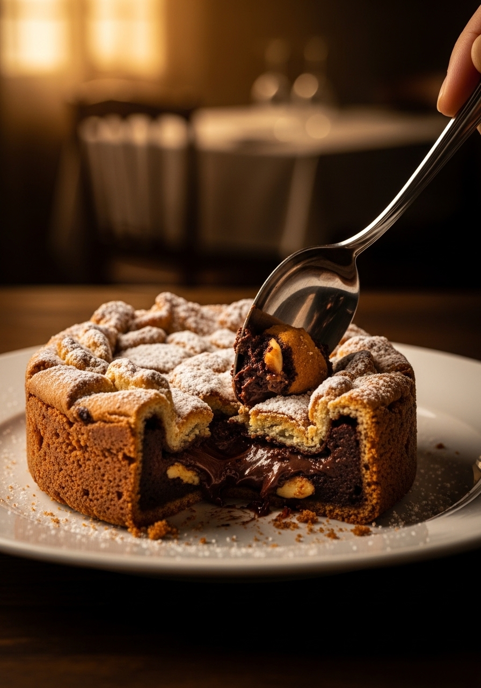

La torta caprese è nata per errore. Secondo la leggenda, negli anni Venti un pasticcere dell'isola di Capri di nome Carmine Di Fiore stava preparando una torta di mandorle per alcuni ospiti americani e dimenticò di aggiungere la farina. Invece di buttare l'impasto, lo infornò comunque — e nacque uno dei dolci italiani più amati al mondo. Naturalmente senza farina, naturalmente gluten-free, con una crosticina leggermente croccante fuori e un cuore umido e intenso di cioccolato fondente e mandorle dentro. Il dolce più famoso di Capri.

Senza FarinaSiamo nell'estate del 1920, sull'isola di Capri. Carmine Di Fiore, pasticcere locale ben noto sull'isola, riceve una commissione importante: preparare una torta di mandorle per alcuni facoltosi ospiti americani in visita sull'isola. Preso dalla fretta e forse dalla distrazione del panorama mozzafiato del Golfo di Napoli, inforna l'impasto dimenticando di aggiungere la farina. Aspettandosi un disastro quando apre il forno, sforna invece una torta diversa da tutto ciò che conosce: densa, umida, con una crosticina leggermente croccante in superficie e un cuore fondente e intensissimo di cioccolato e mandorle. Gli ospiti americani la adorano. La voce si sparge rapidamente sull'isola. Il 'dimenticato' diventa il 'segreto'. Carmine inizia a prepararla intenzionalmente. Oggi, oltre un secolo dopo, la torta caprese è servita in tutti i ristoranti di Capri, in tutta Italia e in tutto il mondo — sempre rigorosamente senza farina, proprio come quella prima volta per errore.
La torta caprese non contiene farina di grano — e non perché sia stata adattata per diete speciali o per seguire tendenze moderne, ma perché la ricetta originale non l'ha mai prevista. Le mandorle tritate finemente forniscono struttura e umidità grazie al loro elevato contenuto di grassi naturali (circa 50% di grassi buoni), mentre il cioccolato fondente ricco di burro di cacao lega il tutto creando una consistenza densa e umida che la farina non potrebbe mai replicare. È la combinazione chimica di grassi delle mandorle, burro di cacao del cioccolato e proteine delle uova che rende possibile una torta senza farina così soddisfacente. Questo la rende adatta a chi segue una dieta senza glutine senza alcuna modifica alla ricetta originale. Per garantire la sicurezza delle persone celiache, è importante utilizzare cioccolato fondente certificato gluten-free e mandorle prodotte in stabilimenti privi di contaminazione crociata.
Ingredienti
Procedimento

La torta caprese si conserva perfettamente a temperatura ambiente sotto una campana di vetro o in un contenitore ermetico per 3-4 giorni — migliorando ogni giorno che passa. In frigorifero dura fino a 7 giorni: tirala fuori almeno 30 minuti prima di servire per riportarla a temperatura ambiente e ritrovare la consistenza fondente. Si congela eccellentemente per 3 mesi, intera o già tagliata a fette singole: scongela in frigorifero durante la notte. Tra le varianti più famose e apprezzate dell'isola c'è la torta caprese bianca al limone: stessa struttura, ma con cioccolato bianco invece del fondente e il profumo del limone di Capri IGP al posto della vaniglia. Altre varianti moderne includono la versione al pistacchio di Bronte (con farina di pistacchi verdi siciliani invece delle mandorle) e la versione con arancia candita e cannella, tipica del periodo natalizio.
Sì, ma il risultato sarà più rustico nel sapore e nell'aspetto. Le mandorle con buccia hanno un sapore più intenso e leggermente amaro e conferiscono alla torta un colore più scuro. Per la versione tradizionale di Capri si usano mandorle pelate. Se hai solo mandorle con buccia, frullale comunque finemente: la torta risulterà ugualmente buona, semplicemente con un carattere più deciso.
La superficie deve avere una crosticina solida che non cede alla pressione del dito, ma il centro deve muoversi leggermente quando scuoti delicatamente lo stampo. Un termometro da cottura inserito al centro deve segnare 85-88°C. Se aspetti che il centro sia completamente fermo, l'avrai cotta troppo e perderà la sua caratteristica umidità interna fondente.
Il pistacchio di Bronte è la variante più famosa e deliziosa. Le nocciole funzionano molto bene creando qualcosa di simile a una torta al cioccolato Ferrero. Le noci creano una versione più amara e intensa. Evita i pinoli: sono troppo delicati, oleosi e non danno la struttura necessaria. Con i pistacchi, riduci lo zucchero di 20g perché sono naturalmente più dolci.
No — non contiene agenti lievitanti (né lievito né bicarbonato) e non si gonfia in forno. Si alza leggermente durante la cottura grazie all'aria incorporata nelle uova, poi si affloscia raffreddandosi: questo è normale e assolutamente desiderato. Quella 'caduta' crea la caratteristica superficie incrinata e la crosticina croccante che la rendono riconoscibile.
Assolutamente sì — è anzi vivamente consigliato. Preparata 12-24 ore prima, gli aromi del cioccolato e delle mandorle si intensificano, la consistenza umida si stabilizza perfettamente e la crosticina si consolida. È uno dei dolci italiani più adatti alla preparazione anticipata, perfetto per i pranzi e le cene del giorno dopo.